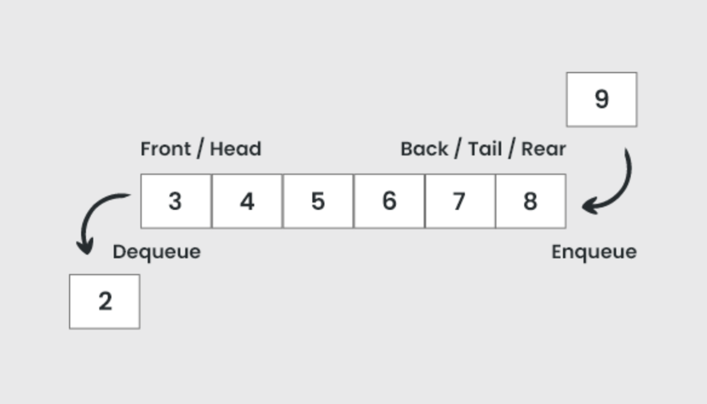

Queues
A queue is a data structure that follows FIFO: First In, First Out. The first item added is the first item removed, similar to a real-life line.

Main operations
- enqueue: add an item to the back
- dequeue: remove the item from the front
- front/peek: view the front item without removing it
Where queues are used
- Printing tasks (jobs wait in order)
- Customer service systems
- Breadth-first search (BFS) in graphs
Typical efficiency: enqueue/dequeue are often O(1).
Types of Queues
- Simple Queue: Standard FIFO structure
- Circular Queue: The rear connects back to the front
- Priority Queue: Elements are removed based on priority
Real-World Example
Operating systems use queues to schedule tasks. Processes are placed in a queue and executed in order.